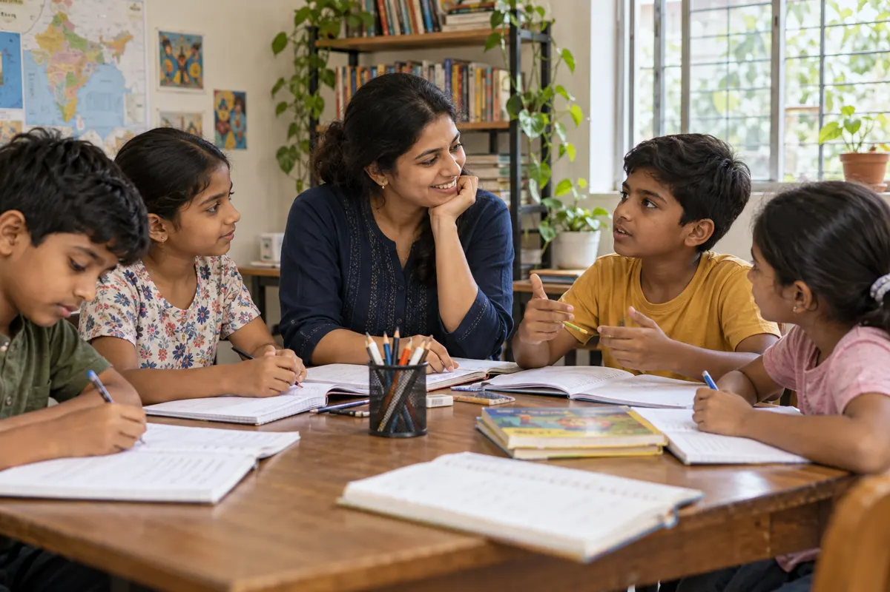
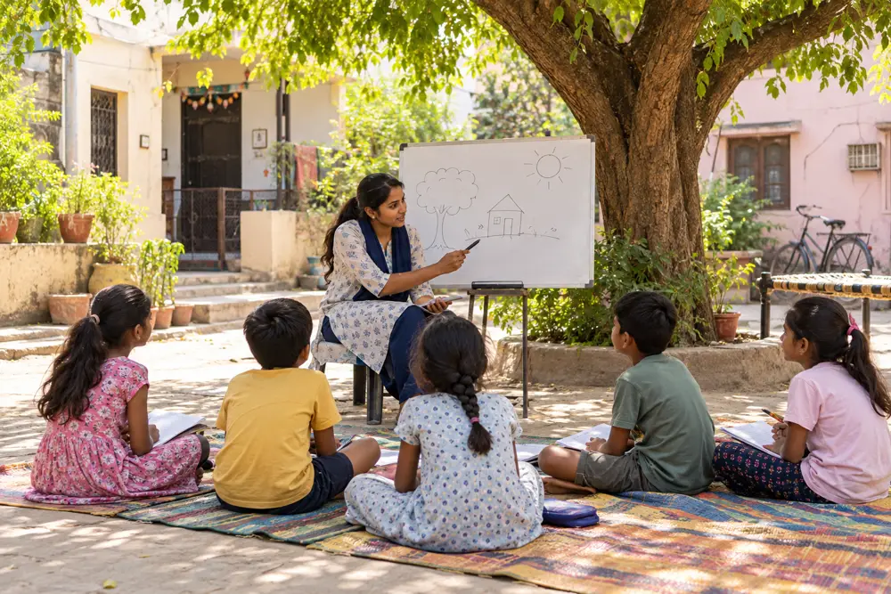
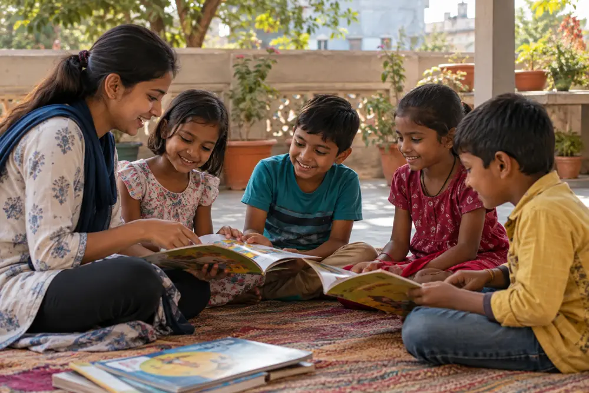
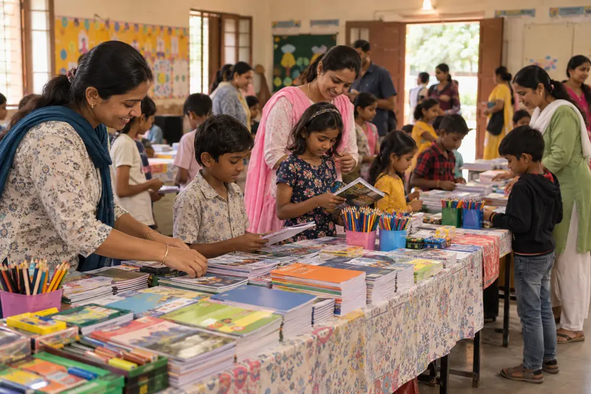
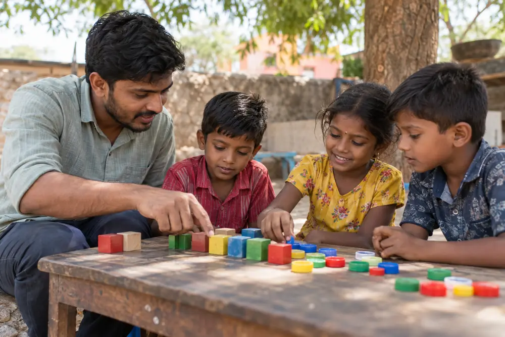
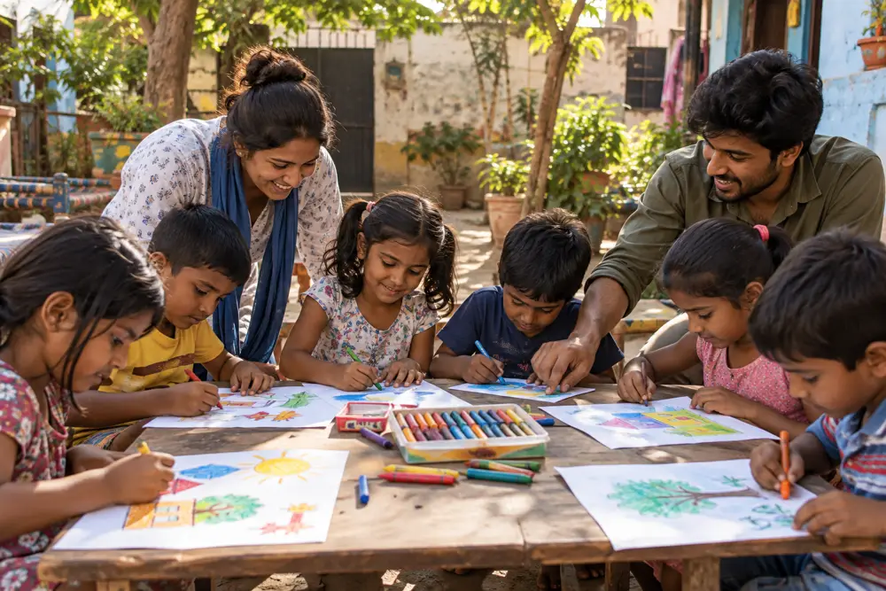
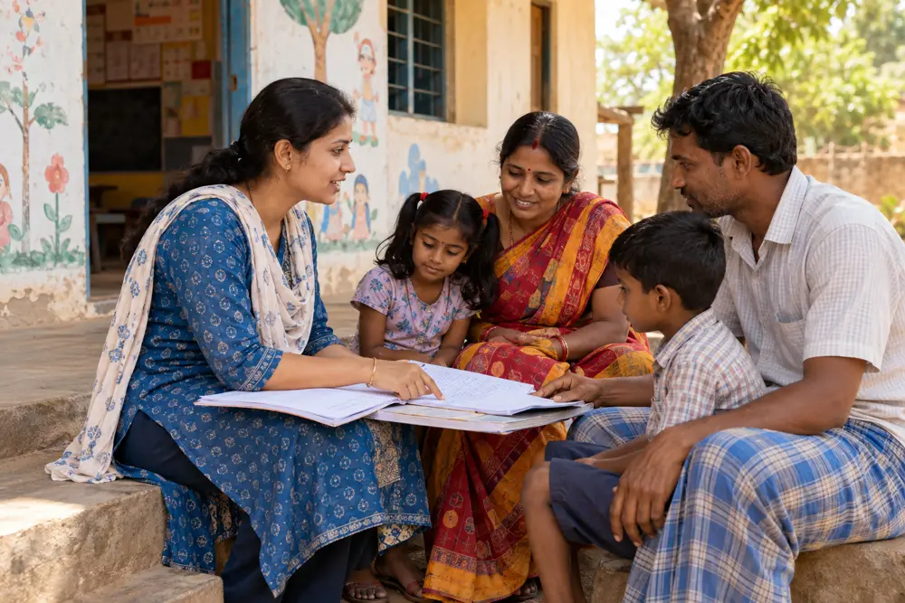
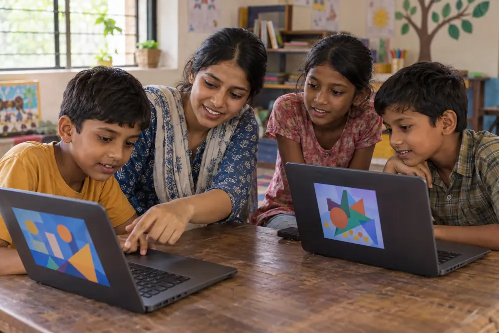
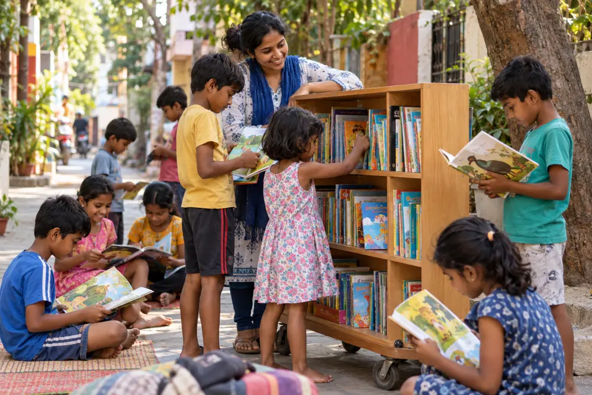
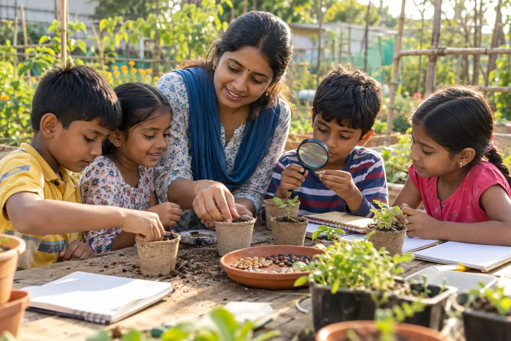

Foundational learning
Reading, writing and numeracy support in small and inclusive learning groups.
We aim to help children build strong foundations in learning, confidence and curiosity — together with families and local educators.
Explore 10 Indian community scenes inspired by our areas of focus.
AI-generated illustrative images. These scenes show possible activities, not actual Karunvaya programmes or documented events.










Select a photo to view it larger.
We plan community-based learning support for children who could benefit from extra attention, access to materials and an encouraging environment.
Our approach will be practical: understand local needs, prepare age-appropriate learning resources and support consistent, safe participation.
Reading, writing and numeracy support in small and inclusive learning groups.
Need-based provision of books, stationery and suitable learning materials.
Communication practice, creativity and positive learning habits.
Speak with parents, teachers and children to learn which support is genuinely helpful.
Prepare safeguarding rules, consent processes and appropriate volunteer supervision before activities.
Use simple learning milestones and respectful feedback without publicising children’s personal details.